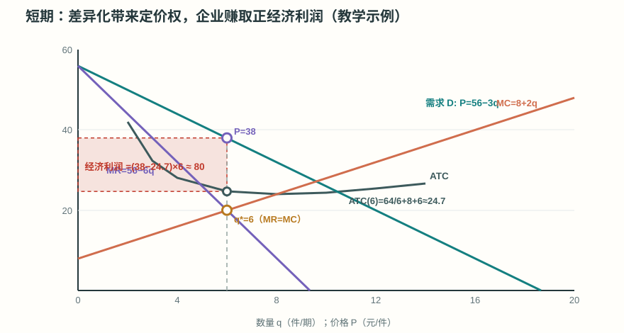
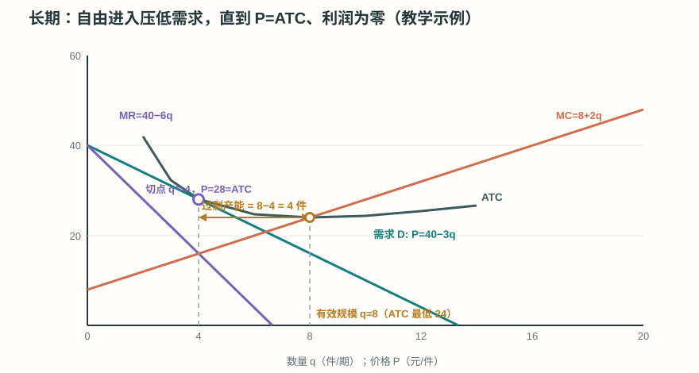

CHAPTER 16 · MICROECONOMICS
垄断竞争：差异化与广告
每家企业都是自己小地盘里的垄断者，却又被自由进入不断拉回零利润：用同一组方程看清短期利润与长期过剩产能。
既竞争又垄断的市场
想象一条餐饮街：十几家餐厅都在卖吃的，没有哪两家完全相同。火锅店比的是汤底，日料店比的是刀工和新鲜度，咖啡店卖的是氛围。它们彼此竞争，但每家对自己的招牌菜都有那么一点定价权——把价格抬高一点，不会立刻失去所有顾客。
这种介于完全竞争与垄断之间的市场，叫垄断竞争 monopolistic competition。它最贴近我们日常看到的市场：理发店、奶茶店、便利店、独立品牌服装。本章用一组教学示例把它的两条主线算清楚：短期内差异化能带来正利润，长期内自由进入会把利润压到零，并留下一种特殊的代价——过剩产能。
垄断竞争的三个特征
垄断竞争市场同时具备三个特征，缺一不可：
- 大量企业 many firms：参与者数量多到没有一家能影响整体市场，但也没有多到产品完全同质。每家企业只占据一小块“地盘”。
- 产品差异化 differentiated products：这是最关键的一条。每家的产品“相似但不相同”，差异可以是真实的（配方、工艺），也可以是感知的（品牌、包装）。正因产品不同，每家才拥有一点定价权。
- 自由进入与退出 free entry and exit：这一条与完全竞争相同。有利润就有人带着新品进来，亏损就有人退出。
名字本身就很传神：“垄断”来自差异化带来的定价权，“竞争”来自大量企业与自由进入。每个企业既是自己小地盘里的垄断者，又时刻面临被替代的压力。
短期均衡：像个小垄断者
短期内企业数量固定。因为产品有差异，每家企业面对的不是水平线，而是一条向下倾斜的需求曲线，于是它的定价逻辑与垄断者相同：先按 MR = MC 定产量，再回到需求曲线读出价格。
把 q=6 代入平均成本：ATC=64/6+8+6≈24.67。价格 38 高于平均成本，企业获得正经济利润：(38−24.67)×6≈80。这正是差异化带来的“小垄断”回报。注意：经济利润不等于收益，它是收益扣除包括隐性成本在内的全部成本后的余额。

长期均衡：进入与过剩产能
短期正利润发出信号：这里有钱赚。模仿者带着“相似但不相同”的产品涌入，每家的需求被分流，需求曲线向左移动并变得更平坦。只要还有正利润，进入就不会停止。
教学示例中，自由进入把需求压到 P=40−3q，恰好与平均成本曲线相切（同点、同斜率）：
解出 q*=4、P=28，而 ATC(4)=28 恰好等于价格，经济利润为零，进入停止——这就是长期均衡。注意此时 P>MC（28>16）：定价仍高于边际成本，配置效率的损失并未消失，只是超额利润被竞争抹平了。
再来找有效规模 efficient scale：平均成本最低时 MC=ATC。由 8+2q=64/q+8+q 得 q²=64，即 q=8，最低平均成本为 24。长期均衡产量 4 低于有效规模 8，差额 4 件就是过剩产能 excess capacity——企业没有把产量做到平均成本最低的那一点。

| 对比维度 | 短期均衡 | 长期均衡 |
|---|---|---|
| 企业数量 | 固定 | 自由进出后稳定 |
| 经济利润 | 可能为正、零或负 | 零 |
| 价格 vs 平均成本 | P 可能 >、= 或 < ATC | P = ATC |
| 价格 vs 边际成本 | P > MC | P > MC（仍有定价权） |
| 产量 vs 有效规模 | 视需求而定 | 低于有效规模（过剩产能） |
差异化：横向还是纵向
长期利润为零，并不意味着企业“怎么做都没用”。差异化决定了谁能活下来、谁能占有更大的份额、谁能定更高的价。通常分为两类：
- 横向差异化 horizontal differentiation：产品在“种类”上不同，没有绝对好坏之分。喜欢甜豆花还是咸豆花、苹果还是安卓，只是偏好不同。
- 纵向差异化 vertical differentiation：产品在“质量”上不同，大多数消费者能一致地判断优劣，如更耐用的电池、更清晰的屏幕、更好的售后。
企业常用的差异化手段包括品牌 branding（用名称与故事制造认知差异）、定位 positioning（选择特定细分市场）与地理位置 location（对便利店、餐厅而言，离得近本身就是优势）。后两者说明：差异化不一定是产品本身，也可能是购买体验或空间的差异。
广告：信息还是说服
垄断竞争市场里广告无处不在，经济学家对它的评价却截然对立：
- 广告作为信息 advertising as information：广告告诉消费者产品存在、价格、功能与购买地点，降低搜索成本，让比较更容易，从而促进竞争。
- 广告作为说服 advertising as persuasion：广告用情感诉求与心理暗示塑造偏好，抬高产品总成本，还可能把“其实差不多”的产品说成很不一样，从而增强市场势力。
信号理论 signaling切中了要害：即使广告不提供任何有用信息，高额支出本身就是一个信号——只有真正有实力的企业才敢投入如此多沉没成本，否则一旦产品质量不佳就血本无归。消费者可以由此推断质量。
广告的作用因商品类型而异：搜寻品 search goods（买前可判断，如手机参数）以信息作用为主；经验品 experience goods（用过才知道，如洗发水、餐厅）更多是信号作用；信用品 credence goods（用了也很难验证，如部分医疗与维修服务）最容易被滥用。
交互实验：需求截距与利润
短期利润与进入压力
成本固定为 TC=64+8q+q²。拖动滑块改变短期需求截距 A（需求 P=A−3q），观察短期产量、价格与经济利润，并与长期均衡（q=4、P=28、利润为零）对比。
需求截距 A=56：短期 q=6，P=38，ATC=24.67，经济利润=80；正利润吸引新企业进入。长期：q=4，P=28。
每次根据解析解重新计算，不使用随机值；默认 A=56 对应正文的短期教学示例。
若需求截距 A 降到 40，短期利润如何？再降到 32 呢，企业会怎样？
查看答案
A=40 时 q=(40−8)/8=4、P=28，ATC=64/4+8+4=28，利润为 0——恰好与长期均衡重合。A=32 时 q=3、P=23，ATC≈32.3，利润≈−28；短期只要 P>AVC（23>11）仍可勉强经营，长期则应退出。
引用文献与适用范围
本章的方程与数值（成本 TC=64+8q+q²、需求 P=56−3q 与 P=40−3q）均为教学示例，不是观测数据；垄断竞争与广告的概念参考以下教材：
- OpenStax · Principles of Microeconomics 3e, Ch. 8: Monopolistic Competition and Oligopoly
- OpenStax · Principles of Microeconomics 3e（教材首页）
广告与差异化部分为教科书常见的概念梳理，未引用具体企业案例的经营数据；经验品 / 搜寻品 / 信用品的划分是信息经济学中的常用分类。需要再次提醒：过剩产能是否构成福利损失，需结合多样性收益与消费者偏好具体判断，不宜一概而论。